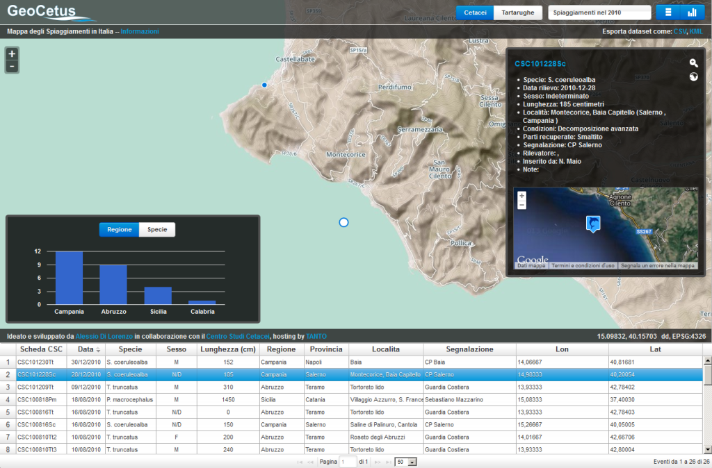
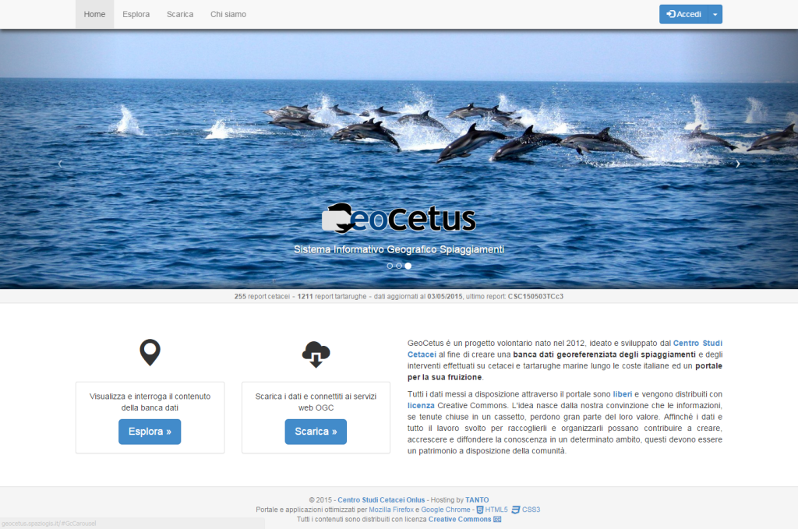

Il 18 giugno 2015 è stata rilasciata la versione 2.0.0 di GDAL/OGR. Una delle novità è legata a un nuovo driver di OGR “Catalog Service for the Web (CSW)”, che consente di accedere a cataloghi di risorse cartografiche esposti sul web.
La sintassi di base per leggere le informazioni da queste fonti è:
L’utility di riferimento è ogrinfo, e sono a disposizione quindi tutte le altre opzioni del comando.
I cataloghi CSW sono un po’ come quei cassetti pieni di calzini in cui, in occasione di una importante ricorrenza, cerchiamo quelli lilla a pois bianchi (sono an pendant con l’ultima nostra meravigliosa giacca), ma per troppa abbondanza e varietà non riusciremo mai a trovare. Bisogna anche saper cercare
OGR è l’ultimo arrivato tra gli strumenti di accesso e ricerca. Ecco qualche semplice esempio, basato sul catalogo del Repertorio Nazionale dei Dati Territoriali (RNDT).
Sul catalogo RNDT sono presenti più di 17000 record, quindi la risposta al comando sarà “lunga”. L’opzione MAX_RECORDS fissa il numero massimo di record che è possibile ricevere ciclicamente durante una chiamata. Nell’esempio di sopra, per 17000 record quindi 170 cicli, ognuno composto da 100 record di output.
Tutti i record all’interno di una determinata area
Ogni record di un catalogo CSW è associato ad un’estensione geografica. Inserendo il parametro -spat si impostano le coordinate del boundig box (xmin ymin xmax ymax, in EPSG:4326) all’interno del quale si vuole eseguire la ricerca: in risposta si avranno tutti i record ricadenti in quell’area.
Tutti i record che contengono una determinata parola (stringa di testo) in uno dei campi esposti dal catalogo
Tutte le altre novità su GDAL/OGR 2.0.0 le trovate sintetizzate nel post di Even Rouault e purtroppo il catalogo RNDT non è ancora nel registro INSPIRE!
Verso la fine del 2011 nella mia casella di posta elettronica trovai un invito per una conferenza dal titolo “Gli squali nel Mediterraneo”, che si sarebbe tenuta di lì a pochi giorni a Pescara.
Ormai non ricordo più se il titolo fosse davvero quello, né chi fosse il mittente della mail, fatto sta che decisi di andare, spinto in gran parte dalla voglia di passare – dopo anni – una giornata ad ascoltare discorsi di biologia marina “pura” e prendermi una pausa dalle solite cose: gis, json, rest, php, cors, script, sql, ecc.
Dell’intervento principale sugli squali ricordo poco o nulla, non mi colpì granché, ma ricordo bene l’intervento del dottor Vincenzo Olivieri, veterinario e presidente della Onlus “Centro Studi Cetacei” (CSC), che non parlò di squali, ma di spiaggiamenti di cetacei, dei casi di studio più interessanti che aveva incontrato, di indagini sul campo e metodologie analitiche, del lavoro svolto dalla sua associazione e di tanto altro. Ciò che mi fece drizzare le orecchie, man mano che andava avanti, fu pensare alla quantità di dati – dati spaziali, probabilmente – che il Centro Studi Cetacei poteva (e doveva!) aver raccolto.
Le domande che avevo in testa erano: “Dove li terranno questi dati?”, “In che formato saranno conservati?”, “Saranno disponibili?”, “Saranno accessibili?”.
Al termine della conferenza andai dritto da Olivieri, parlammo una decina di minuti e venne fuori un accordo, direi uno scambio: il Centro Studi Cetacei mi avrebbe fornito i dati sugli spiaggiamenti dopo averli riordinati e organizzati il meglio possibile, visto che erano sparsi in vari fogli Excel, documenti PDF e addirittura qualche scheda cartacea e io avrei sviluppato, senza costi per il CSC, uno strumento informatico per consultarli in maniera semplice e veloce sul web. In cambio chiesi che il risultato di questo nostro sforzo congiunto fosse messo a disposizione come open data.
Ci tengo a sottolineare che questa mia richiesta venne accolta immediatamente e con entusiasmo, segno di un’apertura mentale da parte del mio interlocutore che, ancora oggi, non so quanto sia facile trovare tra i non addetti ai lavori.
Pronti, si comincia!
La primissima fase consistette in una serie di incontri con Vincenzo e con altre persone del CSC; il nostro obiettivo era individuare un minimo comune denominatore nelle informazioni in loro possesso e, partendo da qui, organizzare lo storico in maniera coerente e il più possibile ordinata.
Successivamente fu la volta di scegliere gli strumenti informatici da usare per dare vita al nostro progetto e, non avendo vincoli se non mantenere a zero i costi dell’operazione, decisi per uno stack tecnologico collaudato e completamente open source: PostGIS, GeoServer e OpenLayers. A dire il vero penso che questa sarebbe stata la mia scelta anche se avessimo avuto un budget da spendere!
Scelto lo stack, restava però il problema di mettere in piedi un server. Come molti di voi sapranno, anche se installato con solo software libero, un server ha comunque dei costi legati all’hardware e alla connettività, il che cozzava non poco con il vincolo del costo zero.
Ebbene, senza TANTO e Andrea, al quale parlai del progetto il giorno dopo la conferenza, l’idea sarebbe rimasta nella mia testa, inespressa nella pratica o, al massimo, sarebbe diventata l’ennesima demo in “localhost” sul mio computer.
Il server, alla fine, ce lo ha messo TANTO! Un hosting non da poco, con PostGIS e GeoServer belli e pronti, Apache e PHP per creare pagine web e, soprattutto, persone competenti a gestire l’infrastruttura.
A questo punto, con i dati che iniziavano a prendere forma ed il server pronto ad accogliere l’applicazione, per me era finalmente ora di entrare nel vivo e tirarmi su le maniche per produrre qualcosa di tangibile da mostrare a Vincenzo e al CSC che, nel ripulire, organizzare e armonizzare i dati storici, avevano passato parecchi giorni a lavorare.
Così all’inizio del 2012 venne fuori il primo output, un’applicazione di web mapping strutturata in maniera abbastanza classica e in grado di mostrare i punti dove erano stati effettuati i rilievi sugli animali spiaggiati e le informazioni ad essi associate su una mappa, una griglia ordinabile e dei grafici. Scegliemmo di chiamarla GeoCetus.

I dati potevano essere filtrati su base annuale, adeguando le tre viste di conseguenza. Selezionando un punto, come lecito aspettarsi, compariva una scheda con tutte le informazioni di dettaglio ed era possibile scaricare tutti i dati disponibili in formato KML e CSV, ovviamente sotto licenza CC BY-SA. Nulla di eclatante, insomma, ma funzionale.
Questa prima versione si basava su una sola tabella PostGIS, denominata “spiaggiamenti”, un po’ di codice PHP per tirare fuori un GeoJSON – preferii non scomodare GeoServer in prima battuta – e la mia collaudata cassetta degli attrezzi JavaScript composta da OpenLayers 2.12, jqGrid e Google Charts.
Un buon inizio, ma serve sempre qualcosa in più
L’applicazione di web mapping prodotta non era male, nel senso che faceva quello che doveva fare in base ai requisiti concordati con il CSC e lo faceva discretamente: mostrava i dati e consentiva di interrogarli e scaricarli.
Ben presto, però, sorse la necessità di aggiornare la banca dati in modo che fosse sempre attuale ed utile, così pensai di ricorrere ad un foglio di calcolo su Google Drive. I nuovi dati sarebbero stati inseriti lì e poi, tramite uno script Python, trasferiti in PostGIS con una query SQL.
Lo script funzionava senza particolari problemi, però lasciava irrisolte due questioni importanti:
vincolare alcuni campi ad un dominio specifico di valori;
calcolare automaticamente il codice identificativo di ogni evento registrato, il quale doveva seguire uno schema preciso per non violare il vincolo di univocità.
Probabilmente lavorando un po’ di più allo striminzito script Python che avevo prodotto si sarebbe potuta trovare la soluzione ad entrambi i problemi, ma ho preferito creare qualcosa che girasse completamente sul nostro server e sviluppare un modulo gestionale in PHP con interfaccia basata sull’ottimo Twitter Bootstrap (all’epoca la versione stabile era la 2.3.2). Dopo qualche giorno di lavoro venne fuori il prototipo del modulo gestionale:
Questo modulo, accessibile solo agli utenti registrati sul database, costituiva uno strumento di facile utilizzo, tramite il quale chiunque poteva registrare un nuovo spiaggiamento senza incappare in errori grossolani, di distrazione e senza doversi preoccupare del codice di registrazione, che veniva compilato in automatico dal modulo stesso, sulla base delle regole stabilite.
Problema risolto? Certo che no! Le esigenze, man mano che GeoCetus e il suo modulo gestionale venivano utilizzati, divenivano ben maggiori del semplice consultazione e inserimento di nuovi dati. Occorreva spesso correggere o cancellare qualcosa e sarebbe stato bello anche poter allegare dei file per caratterizzare meglio i rilievi registrati.
Inoltre, nel frattempo, era saltata fuori anche la necessità di gestire i dati sulle tartarughe marine.
Come spesso accade, l’appetito viene mangiando.
GeoCetus diventa un portale
Per organizzare al meglio tutti le funzioni e i moduli previsti la cosa migliore era, sicuramente, ripensare l’applicazione in forma di un portale, così, dopo qualche mese di lavoro e svariati aggiornamenti a librerie e script vari, il risultato è quello che tutti possono vedere puntando il browser a questo indirizzo: http://geocetus.spaziogis.it.

Il portale prevede diverse tipologie di utenti, che hanno prerogative diverse sulla gestione dei dati e degli allegati. Ad ogni evento inserito sotto forma di punto è possibile associare fino a 3 foto e 3 documenti in formato PDF relativi a necroscopie ed analisi di laboratorio; a breve sarà possibile collegare anche dei filmati. Tutti i contenuti sono aperti, distribuiti sotto licenza CC BY-SA e messi a disposizione degli interessati sia sotto forma di servizi OGC che dei più comuni formati di file usati in ambito di geodati.
Ora, piuttosto che annoiarvi con l’elenco particolareggiato delle caratteristiche del portale, vi invito a consultare lo slideshow in calce al post e, soprattutto, a visitarlo in prima persona.
Piuttosto, mi preme dire che, per quanto ne so, ad oggi, quella di GeoCetus è la più completa banca dati sugli spiaggiamenti di cetacei e tartarughe marine dell’intero panorama nazionale, che si tratta di una banca dati libera ed accessibile e che, questo risultato, per quanto sia ancora passibile di miglioramenti, è stato raggiunto da un gruppo di volontari. Abbiamo investito parte del nostro tempo libero per dare vita a un progetto che, speriamo, diventi un riferimento per gli addetti ai lavori e, soprattutto, contribuisca ad innescare un clima virtuoso di collaborazione e condivisione delle informazioni anche da parte di altri soggetti.
Questo articolo è apparso originariamente su www.big-gim.it.
In occasione del barcamp svoltosi nell’ambito del raduno Spaghetti Open Data 2015 (#SOD15) a Bologna, primo incontro pubblico per discutere del Geographic Information Manager, è stata proposta l’organizzazione di un “tavolo di lavoro” con l’intenzione di produrre un Position Paper su questa nuova figura professionale, da sottoporre all’Agenzia per l’Italia Digitale (AgID) perché possa esaminarne i contenuti ed esprimere proprie valutazioni in merito.
Questa iniziativa, promossa da Stati Generali dell’Innovazione, insieme alla Redazione di TANTO, alla comunità Spaghetti Open Data ed all’Università degli Studi “Link Campus University”, si rivolge alle associazioni, comunità ed ai singoli interessati ad approfondire gli aspetti salienti riguardanti questa nuova figura professionale.
Per contribuire alla redazione del Position Paper si può commentare questo documento condiviso, per avviare una discussione sul tema suggeriamo invece l’utilizzo della nostra mailing list.
Fino al 15 giugno prossimo sarà possibile contribuire alla stesura della versione finale di questo documento.
Per la stesura della versione preliminare del Position Paper sono stati di grande utilità i numerosi pareri e proposte raccolti attraverso il sondaggio sul ruolo del GIM eseguito dalla Redazione di TANTO, i successivi commenti lasciati nel documento contenente tutte le risposte al questionario pervenute, nonché le discussioni avvenute all’interno della mailing list, “luogo” creato per costruire insieme questa idea e renderla concreta.
Il contenuto di questa prima versione del Position Paper è articolato nei seguenti punti:
Introduzione
Razionale del Position Paper
Geographic Information Manager e Open Government
Geographic Information Manager e “Comunità Intelligente”
Il ruolo del Geographic Information Manager nell’ambito dell’organismo d’indirizzo della comunità intelligente
Profilo delle competenze del Geographic Information Manager
Condizioni perché il Geographic Information Manager possa agire con competenza
Formazione e sviluppo professionale del GIM
Gestione dei GIM
Quadro normativo di riferimento
Giovedì 18 giugno, presso la sede di Roma della “Link Campus University“ (Via Nomentana, 335, Roma) è prevista la presentazione pubblica del Position Paper e la sua consegna ad AgID. Nei prossimi giorni, su questo sito, sarà pubblicato il programma dell’evento.
Con questo post vogliamo fare il punto su quanto avvenuto dopo la chiusura del sondaggio sul ruolo del GIM che abbiamo promosso sull’onda della proposta di Sergio Farruggia, per avere un riscontro condiviso, con un panel di operatori del settore geo-ICT.
Iniziamo con il ringraziare quanti hanno partecipato, numerosi rispetto alle aspettative. Ci ha colpito sia il numero che la qualità dell’adesione alla proposta, anche questa non era scontata.
Altro motivo di riflessione è legato a coloro che hanno deciso di rispondere al questionario: molti degli operatori invitati hanno deciso di non esprimersi, mentre c’è stata, in proporzione, una maggiore adesione spontanea all’iniziativa, anche questo è secondo noi un fatto importante.
I dati
Abbiamo inviato per email poco meno di 100 inviti alla compilazione del questionario e ricevuto (grazie anche ad un po’ di comunicazione sul web) 64 risposte.
Quelle alla prima domanda – “Ritieni che il ruolo del GIM sia utile per la PA?” – sono così distribuite:
4 “Per Niente”;
8 “Abbastanza;
52 “Molto”.
Più del 80% dei partecipanti ha espresso un feedback positivo.
Le risposte alla domanda “Ritieni che il ruolo del GIM sia utile per le città/comunità?” sono invece così distribuite:
2 “Per Niente”;
5 “Abbastanza;
57 “Molto”.
Un feedback positivo più forte da cui emerge una valutazione migliore di questo ruolo nel contesto delle città/comunità: 2 persone che avevano valutato per niente utile il GIM per la Pubblica Amministrazione, lo trovano più efficace in un contesto più “dal basso”.
Infine, circa 50 persone hanno manifestato la disponibilità a partecipare alla costruzione di questa campagna, lasciando il proprio indirizzo mail.
I luoghi di #GIMNow
Come già annunciato in precedenza è stata aperta una “mailing list/gruppo di discussione” per costruire insieme questa idea e renderla concreta, la mailing list sta prendendo vita ed abbiamo già iniziato alcune discussioni, ad esempio condividendo i RAW data delle risposte al questionario.
Il canale Twitter@biggimnow potrebbe rappresentare un’ulteriore strumento utile di discussione.
Per stimolare una analisi condivisa utilizziamo un unico documento, contenente le proposte emerse dal questionario su cui ragionare assieme.
Abbiamo “creato” uno spazio su http://big-gim.it in cui raccogliere e sistematizzare il frutto del confronto sul tema del GIM.
Abbiamo ricevuto questa notizia da Regione Piemonte (che ringraziamo), e ci limitiamo semplicemente a rigirarla per darne diffusione: la “Base Dati Territoriale di Riferimento degli Enti - BDTRE” è stata pubblicata con licenza Creative Commons 2.5 BY.
Sotto tutti i dettagli
Il database topografico di Regione Piemonte è OPEN!
Regione Piemonte promuove la costruzione di un insieme comune di dati geografici (BDTRE: Base Dati Territoriale di Riferimento degli Enti), integrati in una infrastruttura che ne permette la condivisione tra i vari soggetti che gestiscono il territorio.
Nucleo portante di tale infrastruttura è il database topografico regionale, realizzato secondo le Specifiche di contenuto dei database geotopografici (G.U. n. 48 del 27-2-2012, Suppl. ord. 37) e contenente gli elementi tipici della cartografia tecnica alla grande scala. I contenuti del database topografico sono resi disponibili in varie forme, dati e servizi, tra cui l’edizione annuale aggiornata della Base Cartografica di Riferimento della Regione Piemonte, che supera la CTR ( L.R. 1/2014 art 10).
BDTRE è Open!
Gli utenti del database topografico sono Enti locali, professionisti, enti universitari e di ricerca, imprese e i cittadini che necessitano di dati topografici per interagire con la Pubblica Amministrazione. Per consentire loro la piena fruizione, Regione Piemonte rende disponibile la BDTRE in modalità open attraverso il GeoPortale Piemonte, con licenza Creative Commons 2.5 BY: gli utilizzatori sono liberi di utilizzare per propria utilità, anche commerciale, i dati della BDTRE riconoscendone la paternità in modo esplicito.
Usiamo BDTRE!
Il data base topografico, l’allestimento raster derivato e i servizi aggiornati all’edizione 2015 sono facilmente raggiungibili dal GeoPortale Piemonte ( www.geoportale.piemonte.it) utilizzando “BDTRE 2015″ come chiave di ricerca nel catalogo.
Sono sempre disponibili, inoltre, i servizi relativi all’edizione 2014.
Lezioni online per spiegare scienza e tecnologia Oilproject organizza con l’Istituto Italiano di Tecnologia una serie di lezioni divulgative su neuroscienze, nanotecnologie, farmacologia e macchine intelligenti, per raccontare al grande pubblico lo stato dell’arte della ricerca di base e applicata. Qui tutti i dettagli. Leggi tutto... (0)
Il GFOSS Day 2011 è a Foggia I prossimi 24 e 25 novembre l’Università degli Studi di Foggia ospiterà il GFOSS DAY 2011, organizzato come di consueto dall’Associazione Italiana per l’Informazione Geografica Libera GFOSS.it Leggi tutto... (1)
Mappali, denunciali e... tassa.li Tassa.li è una interessante startup realizzata da un gruppo di giovani tecnologi, con l’intento di rendere facile la denuncia di esercizi commerciali che non rilasciano il regolare scontrino fiscale. E in un periodo nero come questo, molta gente avrà una gran voglia di partecipare. Grazie a una applicazione disponibile sia per iOS che Android, è infatti possibile in pochi clic geotaggare l’esercizio e riportare la somma dello scontrino non emesso. Il tutto in maniera assolutamente anonima. E questi ragazzi dimostrano di vedere molto lontano, perché presto rilasceranno i dati raccolti in forma totalmente aperta e libera. (7)
TANTO non rappresenta una testata giornalistica ai sensi della legge n. 62 del 7.03.2001, in quanto non viene aggiornato con una precisa e determinata periodicita'. Pertanto, in alcun modo puo' considerarsi un prodotto editoriale.